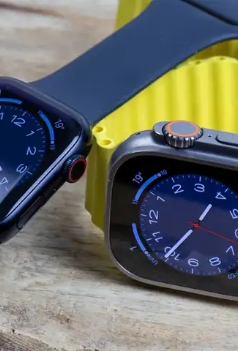
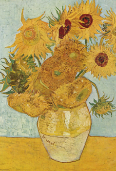

Design, technologie en media



Nepnieuws TikTok
Van alle platformen verspreid TikTok het meeste nepnieuws.
Amsterdam in nieuwe call of duty game
Amsterdam speelt een glansrol in de nieuwe Call of Duty game.
Apple komt met nieuwe watches
Dit najaar brengt apple maar liefst drie nieuwe apple watches uit.
Stijgende schermtijd onder jongeren
De schermtijd van jongeren is gemiddeld 7 uur per dag.
Rapper Kanye West wordt gehaat door zijn uitspraak over joden.
Merken als Adidas, Balenciaga en GAP breken partnerschap met de rapper.
10 min. read
Picture: Kendrick Lamar - To Pimp A Butterfly

iPhone 15
De iPhone 15 wordt de eerste zonder fysieke knoppen.
Nederlandse gamesector groeit
De afgelopen 3 jaar is de Nederlandse gamesector enorm gegroeid.
Actvitisten gooien soep over een van Gogh
Activisten van Just Stop Oil gooien tomaten soep over 'Zonnebloemen' van van Gogh.
Youtube toonde reclames over snus
Youtube liet reclames zien over het verslavende en illegale middel snus.